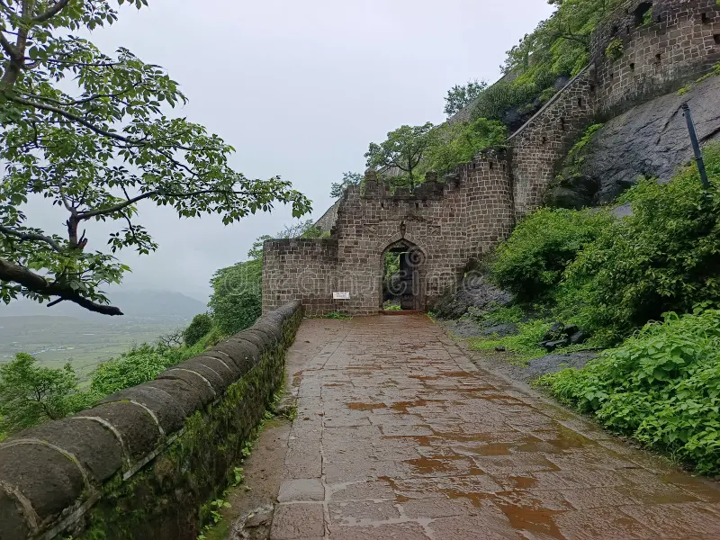
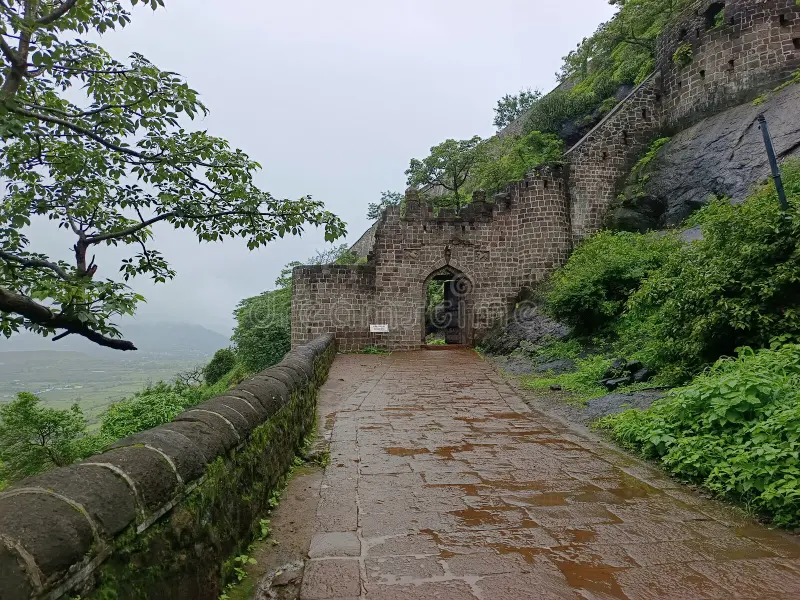

SHIVNERI FORT
Shivneri Fort, located near Junnar in Pune district, Maharashtra, is the birthplace of Chhatrapati Shivaji Maharaj, who was born here on 19th February 1630. This historically significant fort symbolizes the foundation of the Maratha Empire. Built in a triangular shape and surrounded by steep hills, it served as a natural defense. The fort has seven gates, with Shivai Darwaza being the most prominent, and features water tanks like Badami Talav and ancient temples. Shivneri remains a popular destination for history enthusiasts and trekkers, showcasing the legacy of Shivaji Maharaj.
 


Historical Significance:

Shivaji Maharaj spent his early childhood at Shivneri Fort, a place chosen by his mother, Jijabai,
for its safety and strong defenses. Born on February 19, 1630, Shivaji grew up under Jijabai's
guidance, who played a vital role in shaping his character and vision. She inspired him with stories
of great warriors, kings, and devotion to Swarajya (self-rule).
At Shivneri, Shivaji learned basic skills like sword fighting, horse riding, and military tactics,
which prepared him for future leadership. The peaceful and secure environment of the fort allowed
Jijabai to nurture his values of bravery, justice, and care for his people. Shivaji’s time at
Shivneri Fort laid the foundation for his future as the founder of the Maratha Empire.
Tourism :
Shivneri Fort, located in Junnar, Maharashtra, is historically significant as the birthplace of Chhatrapati Shivaji Maharaj. Built in the 16th century, the fort features impressive stone walls, gates, bastions, and the Shivai Devi Temple. The fort offers stunning views of the surrounding landscape and has several caves. It is a popular destination for history lovers and nature enthusiasts. The best time to visit is during the winter months (October to March). Nearby attractions include the Leni Caves and Junnar Town.
Shivai Devi Temple
The Shivai Temple at Shivneri Fort is dedicated to goddess Shivai, the kuldevi of Shivaji Maharaj. Located in his birthplace, the temple reflects Maratha heritage and offers a serene spiritual experience amid the Sahyadri hills.
Birthplace of Shivaji Maharaj
The birthplace of Shivaji Maharaj is a small chamber in Shivneri Fort, known as the "Janmasthan." He was born here on February 19, 1630, and the site holds great historical significance in Maratha history.
Shivneri Fort Walls and Gates
The fort's massive stone walls and impressive gates, including the main entrance, are architectural marvels that showcase its historical significance and defense strategies. The views from the top are breathtaking.

CHHATRAPATI SHIVAJI MAHARAJ
Contact Us
Fort Tourism, Mahalunge, Pune, Maharashtra 411045
+91-1239870990
chhatraptishivajimaharaj@gmail.com